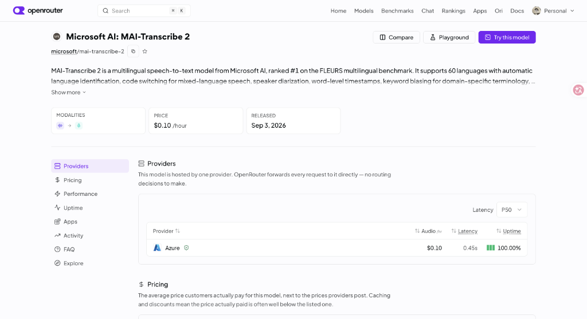

maijev
扔进一个日语视频，出来一份中文字幕
不用维护任何词库
不用维护任何词库
github.com/Yoru0908/maijev
SCROLL ▾
日语字幕为什么难做
三个老问题，每一个都足够劝退。
ASR 直出的字幕没法看句子碎成一段一段，断在助词中间，同音字全凭运气——音对了，字错了。
让 LLM 直接出 SRT 会漂模型改文本顺手就改时间戳，行数对不上、轴会漂移，长视频直接失控。
译名全靠人肉词库人名、节目名、地名每个坑都得提前喂。换一个番组，词库从头再来。
核心思路：把时间轴和语义分开
传统做法
LLM 又写字幕又管时间
一口气让模型读转写、断句、翻译、还时间轴。结果是每件事都做一点，每件事都不可靠。
→
maijev
程序管时间轴，LLM 只管语义
时间戳从 ASR 一路由程序持有。LLM 只回答两个问题：哪几小句该合成一行、这行怎么翻。它从头到尾碰不到时间戳。
ASR — 刚发布的新模型打底
FLEURS #1多语言基准榜首
$0.10/小时音频
60 种语言自动识别 + 语码切换
词级时间戳+ speaker 分离
2026-09-03发布

五步流水线
每一步只做一件事，做坏了可以单独重跑。
01 / ASR
转写
音频切成 5 分钟一块丢给 MAI-Transcribe-2，拿回词级时间戳和说话人。逐块缓存，断了重跑不重复花钱。
02 / ATOMS
切原子
程序按静音、标点、说话人切换，把转写切成最小单元——这是纯确定性代码，没有模型参与。
03 / MERGE
合并
Gemini 只回答一个问题：哪几个相邻原子该合成一行字幕。决策结果按内容哈希缓存。
04 / TRANSLATE
翻译
固定行边界进 Gemini，JSON 按 id 对齐回来；少了一行就自动对半重试，半成品不进缓存。
05 / SRT
渲染
程序把译文贴回 atom 的时间轴，输出 SRT。时间戳从第 1 步到第 5 步没离开过程序。
技术原理：atom 拆分、合并契约、pre-pass 词库 →
P2 · 看每一步在代码里是怎么落地的
tech.html ↗
可选支线 — 译名一致，不靠词库
屏幕上出现过的字、出演者名单、对话里的称呼，先归并成一张自动词库，再注入每一个翻译批次。
完整链路抽帧 → 外部 OCR 读出画面文字 → Jev 筛掉效果字和对白 → 一次纯文本 pre-pass 产出
glossary.md没有 JEV
--ocr-json 直接进 pre-pass——没有 Cloudflare / TypeSafe 凭据也能跑没有 OCR
--prepass 只用字幕全文生成词库远程来源BV 号 / TVer / Abema / YouTube 链接直接喂进来，yt-dlp 下载；TVer/Abema 的出演者名单作为权威人名直进 pre-pass
实测 — 26.5 分钟综艺
$0.25
总成本（ASR $0.044 + LLM ~$0.2）
12min
端到端用时
37
自动词库条目（山川さん→山川宇衣 这类归并）
0
手工维护的静态词库
开源 · MIT
github.com/Yoru0908/maijev
下一页：P2 · 技术原理